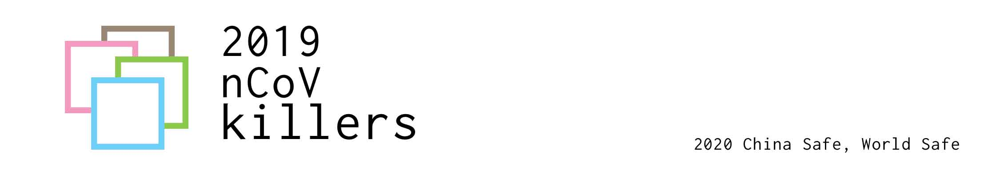

Cloud Computing(2020) labs of HNU
This is the lab of Cloud Computing 2020. Our team members are Feng Yangyang(@CynricFeng), Shi YuanYou(@SHI Yuanyou), Feng Mengyue(@mengyueFeng) and Jin Jiexi(@Magari).
At the beginning of 2020, a war on 2019_nCoV has begun in China. In this year's Spring Festival, there are no bustling crowds, no visits between relatives and friends. The whole of China seemed to hit the pause button, and everything paused at that moment.
As students majoring in computer science in Hunan University now, we cannot be virus hunters or virus warriors in the first line of the battlefield. But now, we complete every lab of the Cloud Computing course well at home is the best support for frontline fighters. Cherish time, study hard and day day up(make progress day by day).
This time, we are all fighters in this war. We all are 2019_nCoV_killers.